The Percussion
Rhythm / Execution / Volume
The Shark of Wall Street · Dossier
Zane Cross — Viral Percussion & Weaponized Populism
Tariq Al-Fayed fought with billions in sovereign wealth. Nicolás Reyes fought with sicarios and lead. The Shark fought with cold, unforgiving algorithms.
But Zane Cross fought with something much more terrifying: blast beats and ten million angry people scrolling TikTok.
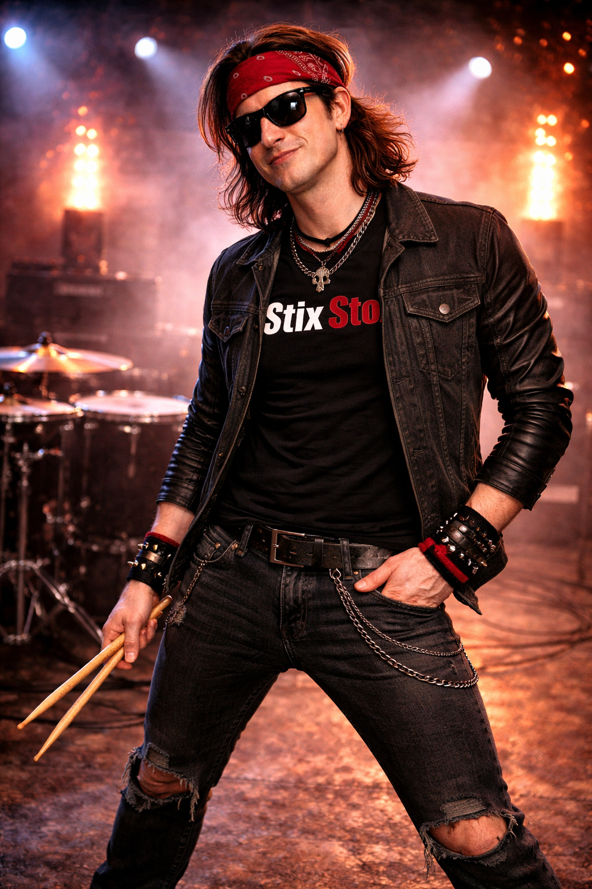
Zane wasn't just a day trader; he was an eccentric savant and the former heartbeat of an underground hard rock band. Underneath the chaotic persona of Stix Stox — the man who went viral for executing complex options spreads by hitting midi-mapped cymbals while streaming live to TikTok — lay an absolute genius. To Zane, fundamental value investing wasn't math; it was a polyrhythm. He could dissect a corporate balance sheet, calculate intrinsic value margins, and map out the mechanics of hedge fund over-leverage with the exact same terrifying precision he used to lock into a 220 BPM tempo.
But Zane didn't write white papers. He despised the gatekeepers of Wall Street. He recognized that when the elite manipulated the market, they relied on retail investors acting rationally and predictably. So, Zane weaponized the noise.
He wired his drum kit directly into his brokerage API. He didn't click a mouse; a strike to the snare executed market buys, his tom rolls routed options ladders, and his crash cymbals closed positions. He streamed the madness daily, drumming furiously while shouting financial analysis over the heavy metal breakdowns. He pointed a hive mind of ten million degenerates at Wall Street's vulnerabilities, creating massive, violent gamma squeezes that vaporized hedge funds to the beat of a double-kick pedal.
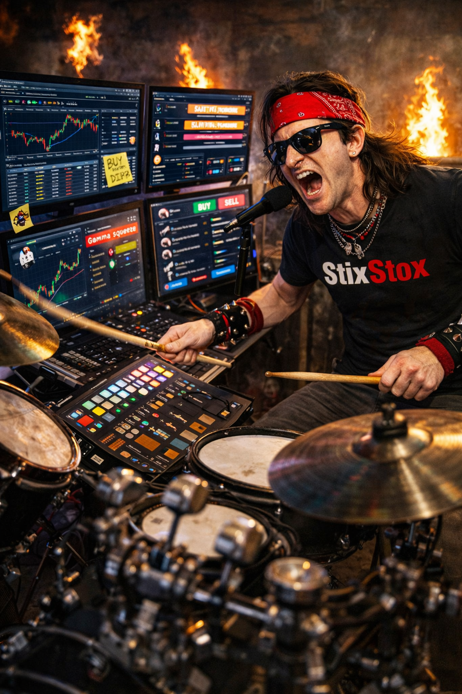
He was the king of the Swarm.
Deep within the digital fortress of the World Trade Factory, The Shark watched his terminals bleed red.
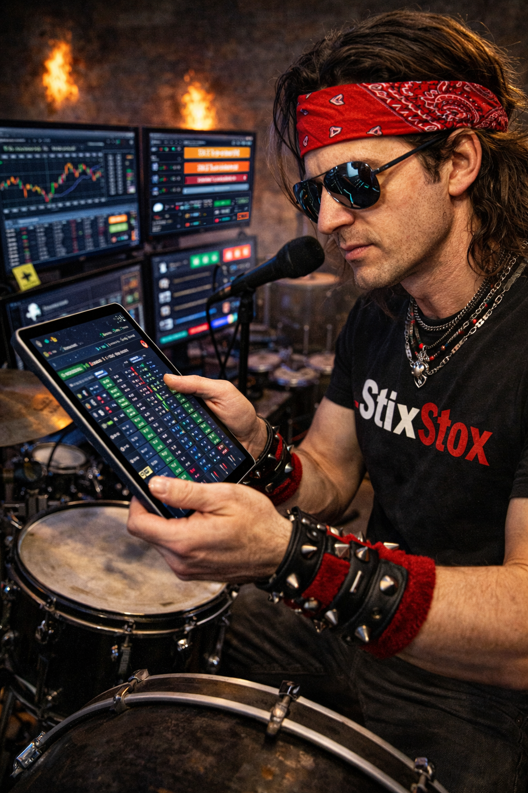
Tariq's half-billion-dollar synthetic short attack was merciless. The Whale was dumping massive blocks of phantom shares into the dark pools, suffocating The Shark's shell companies and draining his liquidity. The Shark had the weapon to stop it — the biometric flash drive Cedric had just extracted from Cleo Vargas — but a weapon takes time to fire.
The drive needed to be decrypted, translated, and anonymously smuggled into the hands of Nicolás Reyes in Sinaloa. The Cartel boss would then need time to verify Hector's betrayal and order the hit on Tariq's Macau operation. That process would take at least forty-eight hours.
The Shark didn't have forty-eight hours. At the current rate of Tariq's short-selling, The Shark's algorithms would be completely liquidated by the opening bell on Friday. He needed an immediate, devastating counter-offensive to absorb Tariq's attack and bleed the Whale's margin accounts dry while the blackmail worked its way through the underworld.
The Shark needed a shield. He needed a squeeze.
The Shark stood in a brutalist, concrete-walled loft in Brooklyn. The walls were lined with heavy acoustic foam. The only light in the room came from the toxic-green glare of eight curved monitors and a blindingly bright LED ring light illuminating a massive, matte-black DW Collector's Series drum kit.
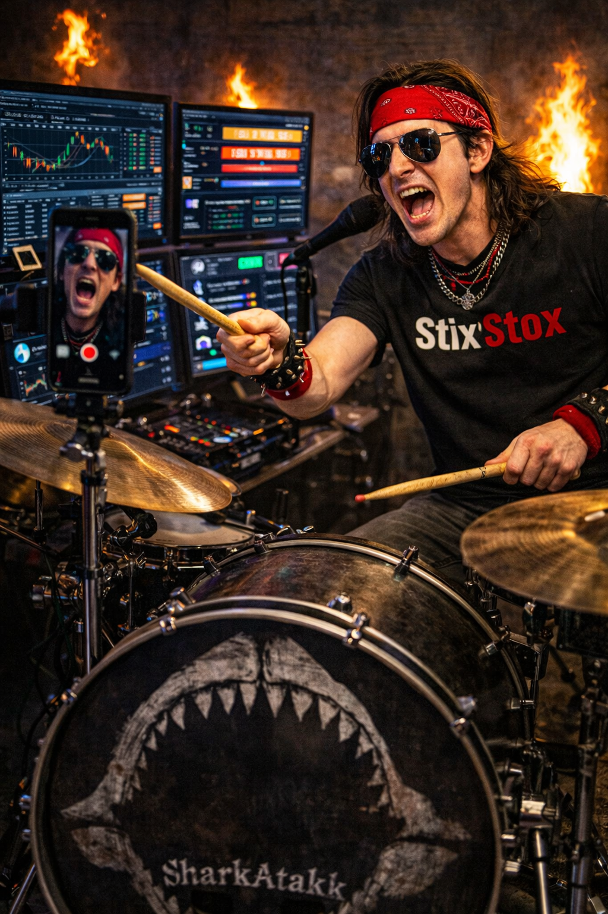
The front of the bass drum bore a faded white decal of a jagged shark jaw — a nod to his old band, SharkAtakk. Zane Cross sat on his drum throne, a pair of aviators reflecting the terminal data. He was mid-stream, aggressively riding his hi-hat while shouting at his iPhone camera about short-interest volume.
"You're a hard man to get a meeting with," Zane said, his feet never leaving the pedals as he locked eyes with The Shark. He caught his left stick and cracked the rim of his snare drum once. A terminal screen behind him instantly executed a 500-share block buy. "And you look like a fed."
"I'm not a fed," The Shark said, his voice entirely devoid of inflection. "I am the architect of the World Trade Factory."
Zane stopped playing. He reached over and killed the TikTok stream. He slowly turned his head, his eyes narrowing. In the retail trading underworld, The Shark was a myth — a digital ghost who hunted institutional algorithms.
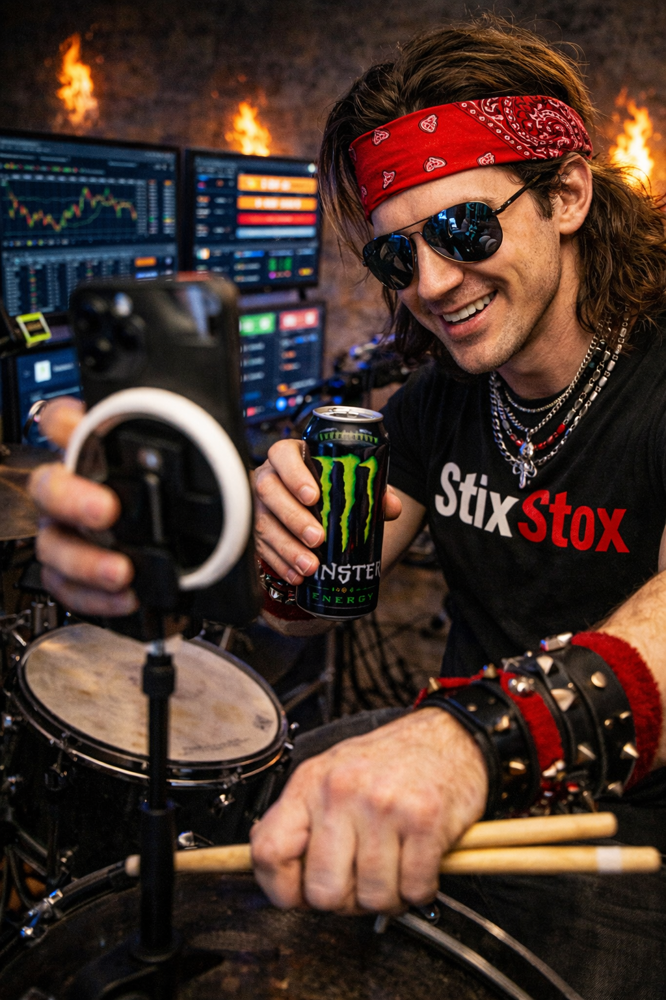
"The Shark," Zane whispered, a grin spreading across his face. "No shit. I read your white paper on the private credit rot. Absolute poetry. You mapped out the collapse six months before the big boys even smelled the smoke. So, what is a god doing in my studio?"
"I am being hunted," The Shark said plainly. He stepped forward, placing an encrypted tablet down on the skin of Zane's floor tom. "A sovereign wealth proxy operating out of Macau is currently executing a naked short attack against six of my key infrastructure holdings. He has unlimited capital. He is trying to pin my stock prices to zero to force a margin call."
Zane picked up the tablet. He scrolled through the raw data, his savant brain instantly digesting the complex options chain, the put/call ratios, and the sheer, arrogant volume of Tariq's short positions.
"This guy is shorting 140% of the public float," Zane said, his breath catching slightly. "He's naked shorting. He assumes retail is asleep. He's incredibly over-leveraged."
"He is," The Shark confirmed. "He is relying on fear to drive the price down. I need you to give him violence."
"If my Swarm buys the underlying stock, and we flood the options chain with out-of-the-money calls..." Zane muttered, his feet instinctively finding the pedals of his double-kick drum, tapping out a rapid, nervous tempo. "The market makers will be forced to buy millions of shares to hedge their delta. It will create a feedback loop. A gamma squeeze. We'll rip the face right off this Macau whale."
Zane looked up at The Shark, the toxic-green light reflecting in his glasses.
"Why should I do this for you?" Zane asked. "I don't play mercenary for billionaires."
"Because you hate the rigged game," The Shark said softly. "This isn't a hedge fund, Zane. This is a foreign royal treating the American equity market like his personal casino. I am giving you the coordinates of a Death Star that forgot to cover its exhaust port. I am handing you the match."
A slow, manic smile spread across Zane's face. He reached out and cracked open a fresh can of energy drink. He pulled his iPhone out of the ring light, adjusting the angle, and gripped his drumsticks tight.
"I like the stock," Zane said.
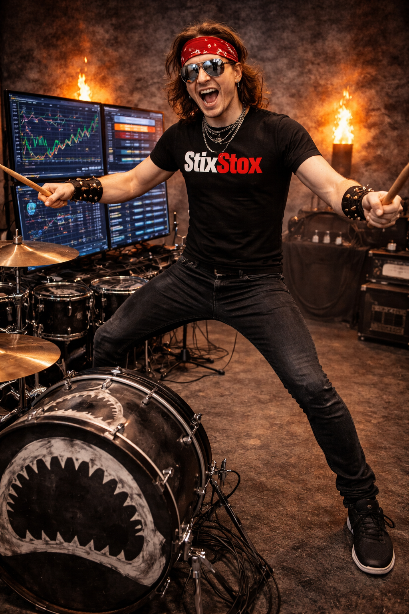
He tapped the screen to go live on TikTok and Twitch simultaneously. The viewer count skyrocketed: 100k, 500k, 1.2 million viewers in under three minutes.
"What's up, degenerates!" Zane roared into the camera, dropping a thunderous, rolling drum fill across his midi-mapped toms. Every strike fired off a flurry of limit orders that echoed through millions of bedrooms and basement trading desks across the globe. He projected Tariq's exposed short positions onto the stream overlay. "The suits are asleep at the wheel again. Some billionaire whale thinks he can naked-short this company into the dirt. Look at this float! Look at this leverage! They are begging for a squeeze."
The Shark watched the Level 2 data on the adjacent monitor. For ten seconds, there was silence.
And then, Zane stood up on the pedals, raised his right arm, and struck his Zildjian crash cymbal with everything he had. The cymbal triggered a master macro script.
A tidal wave of retail buy orders slammed into the exchange. Ten shares here. A hundred shares there. Two thousand call options from a user named DiamondHands99. The sheer, irrational volume overwhelmed Tariq's algorithmic sell-walls in milliseconds. The stock price ticked up. Then it surged. Then it violently gapped up thirty percent in a single minute.
Tariq’s margin accounts began to hemorrhage. The Shark had his shield.
The encrypted feed from his brother, The Sovereign, snapped to black. Tariq Al-Fayed was left alone in the freezing, hyper-conditioned air of his Macau penthouse. Below him, the Cotai Strip glittered with billions of dollars of casino revenue, but inside his chest, there was only a terrifying, hollow dread.
Liquidate, Khalid had ordered. Swallow the four-billion-dollar loss.
Tariq stared at the trading terminal. The ticker for The Shark’s shell companies was climbing in a violent, vertical green spike. Millions of retail investors, guided by the manic drumming of Stix Stox, were executing a flawless gamma squeeze. If Tariq clicked the “Liquidate All” button, the resulting cascade of automated market buys would trigger an even more violent spike. He would be ruined. He would be humiliated globally by a TikTok streamer.
A cornered apex predator does not surrender. It goes for the throat.
Tariq could not touch The Shark digitally. He could not find his physical location. But Stix Stox was not a ghost. He was an idiot in a basement, broadcasting his face, his voice, and his IP address to ten million people.
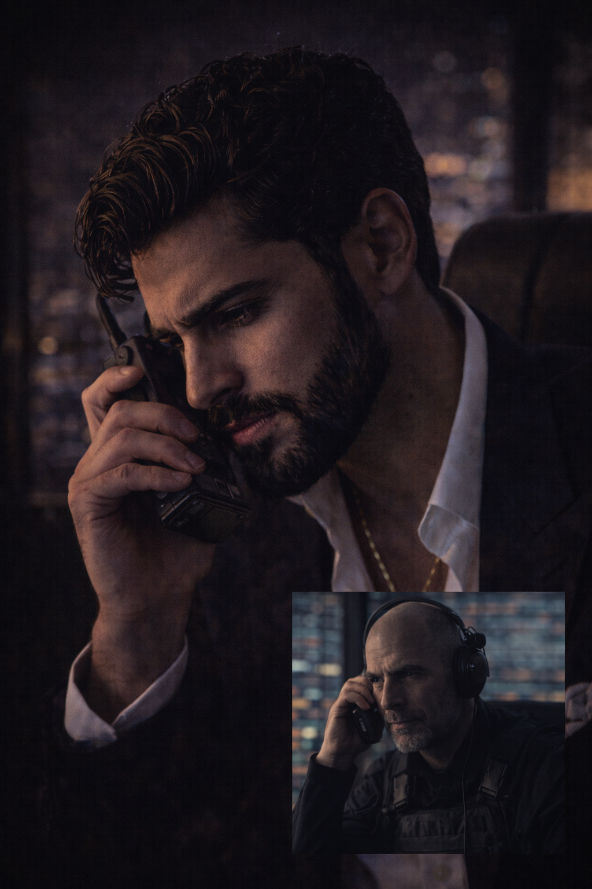
Tariq picked up his secure comms unit. He dialed his lead tactical operative in New York — the ex-Mossad commander who had failed to intercept the Ghost Runner in the Meatpacking District. The operative was desperate for redemption.
“I have an IP ping from a heavy data-node in Brooklyn,”
Tariq said, his voice cold and devoid of mercy. “It is the broadcast hub for the retail insurgency. Rip it out of the wall. Silence the drummer. If the stream dies, the retail panic will shatter the squeeze. Do it now.”
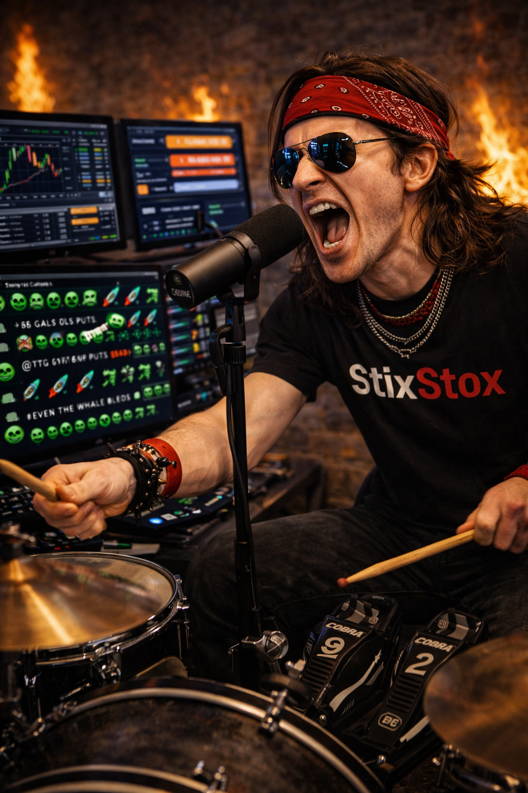
In his brutalist Brooklyn loft, Zane Cross was completely submerged in the polyrhythm of the market. His double-kick pedals hammered a relentless tempo as he barked options data into the Shure SM7B microphone. His Swarm was eating the Whale alive. The chat was a blur of toxic green emojis and rocket ships.
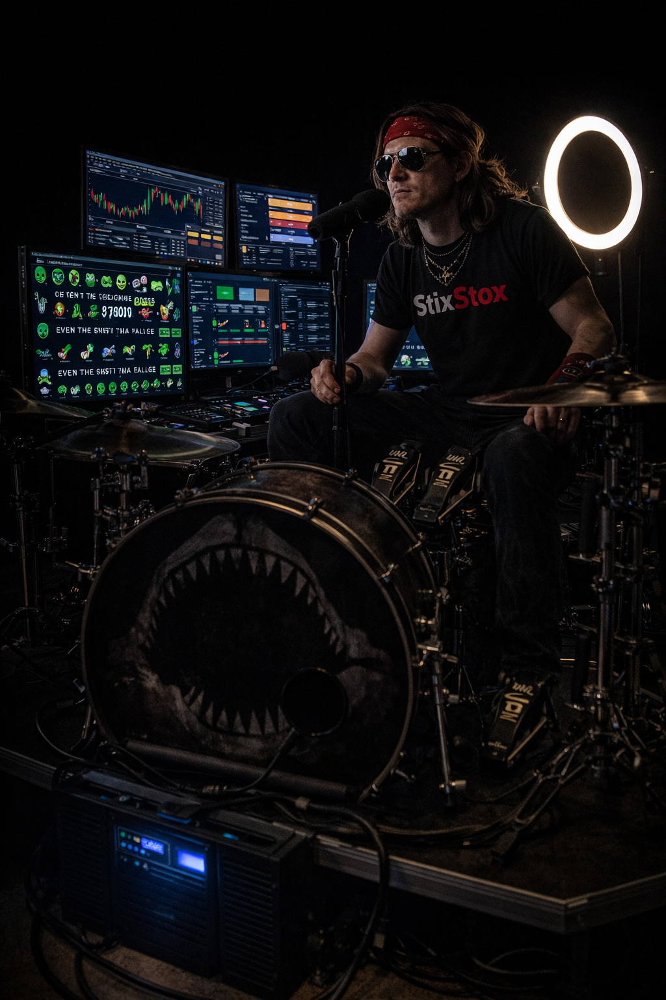
Then, the power to the entire city block was cleanly, surgically severed.
The heavy bass of the music died instantly. The overhead industrial lights snapped off. But the studio didn’t go completely dark. The Shark didn’t leave his assets exposed. Zane’s entire eight-monitor command array, his internet up-link, and his blazing LED ring light were wired into a massive, industrial Uninterruptible Power Supply hidden beneath his drum riser. The stream didn’t even drop a frame.
But Zane stopped playing. He heard the distinct, heavy thud of the reinforced steel fire door at the end of the hallway being bypassed by a hydraulic ram.
Zane wasn’t a soldier. He was a drummer. But he recognized the tempo of a breach.
He turned to the camera, his eyes wide behind his aviators. “Swarm,” Zane said, his voice dropping an octave, abandoning the hype-man persona entirely. “They just cut the power to the block. Someone is in the hall.”
The chat froze for a fraction of a second before exploding in pure panic.
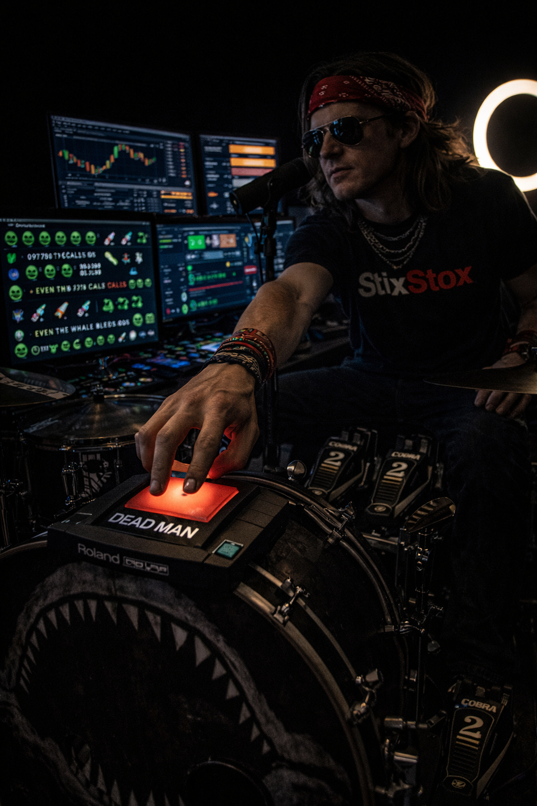
Zane reached down to his Roland midi-trigger pad. He hit a massive red button marked DEAD MAN. A custom macro script deployed, setting automated limit buys across all of his accounts, ensuring that if he was physically removed from the keyboard, the Swarm’s pressure on Tariq would remain locked.
The heavy wooden door to his loft was kicked open so hard it splintered the doorframe.
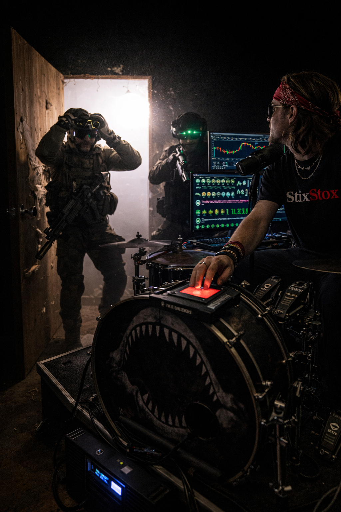
Three operatives swept into the room, their suppressed rifles raised, their faces obscured by panoramic night-vision goggles. The blinding glare of Zane’s 18-inch LED ring light immediately washed out their optics, causing the lead operative to flinch and rip his goggles off.
Zane didn’t freeze. He reacted with pure, percussive instinct.
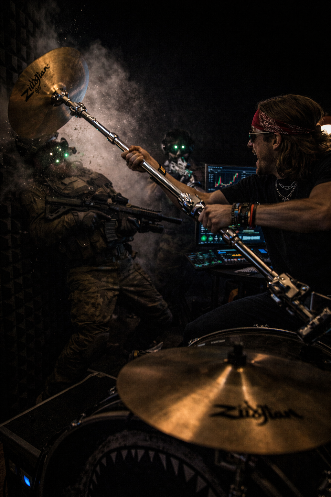
He grabbed a heavy, chrome DW 9000 boom cymbal stand, lifting it like a medieval steel club, and swung it violently. The heavy brass Zildjian crash cymbal acted as a weighted axe head, smashing directly into the lead operative’s chest armor, knocking him backward into the soundproof foam of the wall.
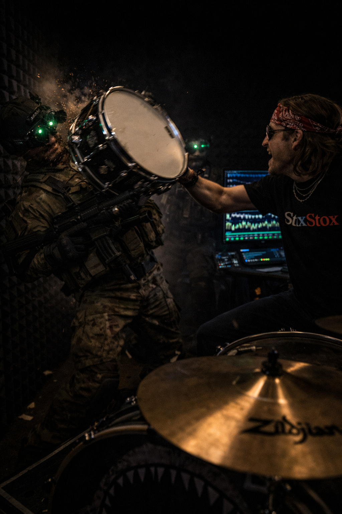
The second operative raised his rifle, but the tight confines of the drum kit made it impossible to acquire a clean angle. Zane hurled a snare drum directly at his face, the heavy metal rim catching the operative in the jaw.
But the third operative was a professional. He stepped out of the blinding light, lowered his center of gravity, and tackled Zane entirely over the drum kit. They crashed through the acoustic panels and onto the hard concrete floor. The operative pinned Zane by the throat, pulling a combat knife from his tactical rig.
“Cancel the trades,”
the operative hissed, pressing the cold steel against Zane’s carotid artery. “Kill the stream. Now.”
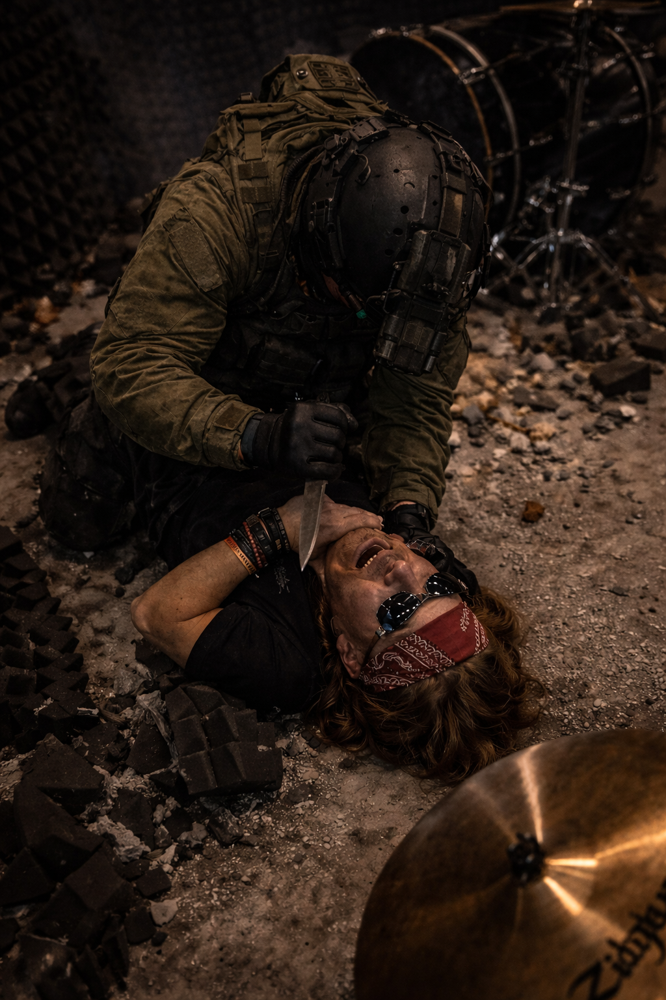
Zane choked, struggling against the weight of the operative, staring desperately at the camera that was broadcasting his execution to ten million people.
And then, the entire eastern wall of the loft exploded.
The Retail Insurgency Toolkit